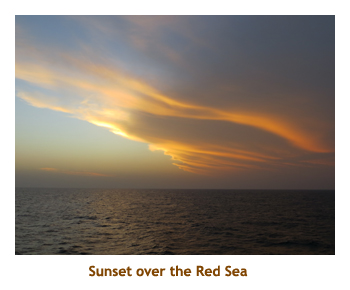

[ Home ] [ Travel ] [ Photography ] [ Pets ] [ Games] [ Rowing] [ Physics ]


Multiple Itineraries for the Middle East Cruise
Itinerary #2 (political unrest, Egypt out):
Itinerary #3 (Gaza uprising, Israel out, Egypt partly back):
Itinerary #4 (calming down, Israel back):
Itinerary #5 (actual):
Travel
Cruises
Past Cruises (Diaries)
Future Cruises
Rogues Galleries
Land Trips
Diaries (Land Trips)
Hawai'i - Big Island - 04'01
Hawai'i - Maui - 05'02
Hawai'i - Big Island - 04'03
Hawai'i - Kaua'i - 09'04
Hawai'i - Big Island - 04'06
Hawai'i - Maui - 04'06
Mainland China - 05'07
Phoenix, Arizona - 12'07
Greek Isles - 05'08
Hawai'i - Kaua'i - 09'08
Hawai'i - Big Island - 09'09
Hawai'i - Maui - 05'12
Hawai'i - Big Island - 04'13
Ireland - 08'13
Mexico - Cancun 11'13
France/Belgium/Lux 07'15
Hawai'i - Big Island - 05'17
England / Wales - 06'17
Hawai'i - Big Island - 09'19
Photography
Cameras
Underwater
Pets
Tara
Blackie
Whitey
Muffy
Ollie
Rusty
Fluffy
Rufus&Dufus
Games
Rowing
Physics
This is the first cruise that we have had two or more major itinerary changes happen before the cruise. Our 2004 Panama cruise was bumped by a week due to a group booking, and our 2007 Baltic cruise had the port order shuffled a couple of times. However, these cruises still hit all the planned ports, just on a different date. The Middle East cruise was different in that ports were were actually deleted and replaced by other ports. It was interesting to watch on Cruise Critic as independent tour organizers hurried to change dates and ports as the itinerary changed.
The cause of the itinerary changes was mainly due to political unrest. The original
itinerary featured major stops in Israel and Egypt. When the Muslim Brotherhood
was ousted in Cairo, the unrest caused Oceania to delete the planned stops in
Egypt. Likewise, when the short Gaza war broke out with Israel, the Israeli stops
were pulled. These were understandable changes given the circumstances.
But two weeks before sailing, both hot spots had cooled to the point where the original
itinerary was re-instated.


Note that there are some pretty big "one time" bucket list items on this itinerary - ports that people feel they must get to once in their lives. Hence, a number of passengers had booked this cruise based on specific ports such as in Israel and Egypt. We were the opposite in that Egypt and Israel were "been there, done that" places and we were intrigued by the replacement ports (all new to us) in Turkey, Cyprus and the Greek Islands It was interesting to listen to passengers give their opinions of the different itineraries based on when they booked. Those who had booked for the original itinerary were happy while those of us who booked when the replacement itinerary was in effect were somewhat disappointed.
This cruise covered at lot of well known bodies of water. I found it interesting enough to document our progress through these waters in the sequence that we encountered them. See below for the water "itinerary". The two red items are where we snorkeled.
Waterways: